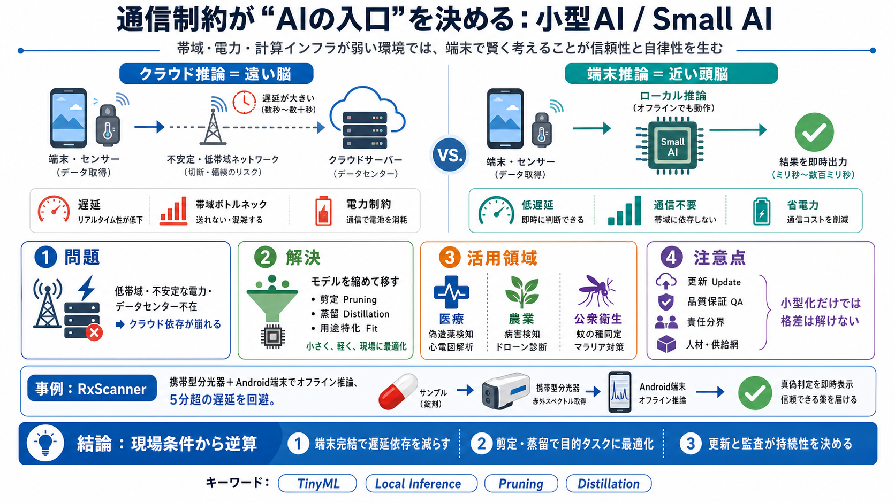

Small Language Models (SLMs): Comprehensive Guide 2026
Small Language Models (SLMs) are neural language models with **parameter counts typically ranging from a few million to …

送信待ち・5分超の遅延が致命的
常時稼働が難しく省電力が必須
回線 → 待ち時間 → 結果
入力 → 端末内推論 → 結果
不要な重みを削減
大モデルの知識を小モデルへ
用途特化で効率を最大化
AIを遠隔サーバ（米国）で推論
短期間でモデル縮小
偽造薬検知 / 心電図推定
病害検出 / ドローン監視
蚊の発生監視 / マラリア媒介対策
ワイン畑の害虫検知（例）
クラウド依存が増えやすい
端末内で推論しやすい
端末側で高速推論
消費電力を抑える
小型モデルを流用しやすい
アプリ更新や新しい検体への追随
電力・同期・監視が継続要件
教育と実装を担う人の確保
部品調達・保守体制が必要
誤判定率 / 偽陽性・偽陰性の影響
オフライン更新 / 再学習頻度 / 監視
誰が誤判定に責任を負うか
臨床データ・監査・失敗時対応
端末完結で遅延依存を減らす
剪定・蒸留で目的タスクに最適化
更新と監査が“持続性”を決める
IEEE Spectrum：Small AIが有効な理由（通信・電力制約とローカル推論）
RxScanner：携帯型分光器＋Android端末単体でのオフライン推論
TinyML / Local Inference / Pruning（剪定）/ Distillation（蒸留）
誤判定の安全性検証、更新設計、責任分界、電力・教育・供給網
Small Language Models (SLMs) are neural language models with **parameter counts typically ranging from a few million to …
# What are small language models? Small language models (SLMs) are artificial intelligence (AI) models capable of proces…
# Balancing power and efficiency: the rise of small language models. Language models are essential for enabling machines…
# Introduction to Small Language Models: The Complete Guide for 2026. In this article, you will learn what small languag…
# What Are Small Language Models? Small models are typically deployed for a single specific task. When it comes to gener…